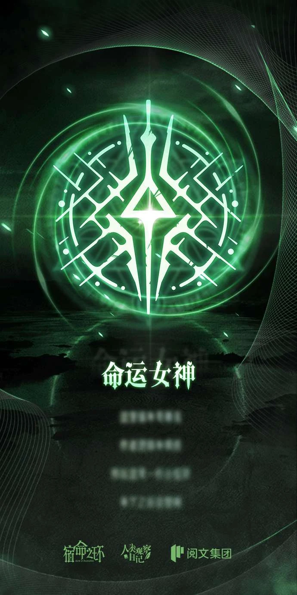

Overview
The Goddess of Fate is one of the Outer Deities from the Cosmos that attempted to invade Earth. "She" is the current owner of the Eternal Edict Pathway.
"She" is the eldest daughter born from the union between the Mother Goddess of Depravity and the Original Creator.1Book 2, chapter 1168
Honorific Name
The Weaver of All Fates; The Symbol of Ultimate Judgement; The Eternal Goddess of the Future (所有事物的命运纺织者， 最终裁决的象征， 永生的未来女神)
Symbols, Authorities & Abilities
"She" possesses full Authority over the Eternal Edict and the corresponding Symbols, which include but are not limited to the following:
- Eternal Edict: Authorities over the Weaving, Judgement, and Gathering of Fate. And the Symbols of Weaver of All Fates, Final Judgement and Eternal Life.3Book 2, chapter 1164
The Symbols, Authorities, and Abilities "She" possesses and displays at the Above the Sequence level include:
- Weaver of All Fates: "She" symbolizes the Weaving of chaotic destiny into a semblance of order, forming the foundation of the current River of Fate.9
- "She" can consciously Weave, guide, and sever even the fates of Great Old Dominators.4Book 2, chapter 1171
- "She" can Weave a new Fate and new possibilities for "Herself" and others.4
- During Project Vortex, "She" blessed the event to be possible without being spied by other higher beings.5
- By using the bead relic originally belonging to a Dao Integrator of the Key of Light (Sefirah) as a medium, "She" could Weave a new Fate and grant new possibilities to the corresponding Dao Integrator inside the Golden Buddha, thus destabilizing "Him" and causing "His" body to collapse.4
- When facing the massive black hole created by the Supernova Dominator, "She" Wove "Her" own Fate to evade the pull and reach the edge of its influence unscathed.4
- The essence of Fate in the universe is infinite chaos. Even the Goddess of Fate can not fully control it, nor can "She" ensure the River of Fate always flows according to "Her" Woven designs.
- In the domain of arrangements, "She" is stronger than the God Almighty who wields authorities over the Mind and Envisioning.10
- Final Judgement: "She" is the symbol of Ultimate Judgement. "She" can cut others' River of Fate, severing all tributaries of Fate. By cutting, "She" can also indirectly affect the future and therefore affect dreams.4
- Those that are not Above the Sequence will watch helplessly as death and an end approaches them, with no way to reverse Fate.6Book 2, chapter 1172
- For most Great Old Dominators, "They" will lose "Their" powers and authorities in such a state, unable to wield many of "Their" symbolisms. At that moment, a decisive attack from "Their" enemies can prove fatal.6
- The Final Judgment of Fate cannot directly kill a Great Old Dominator, but can temporarily strip "Them" of most of "Their" symbolisms, reducing "Them" to a weakened state because "They" are rejected by Fate itself. This rejection turns "Them" into miserable wretches with no future or dreams.6
- Eternal Life: As long as the Fates of all things converge into the River of Fate, "She" attains immortality as the Eternal Goddess of the Future. Even if "Her" body is destroyed, "Her" consciousness and spirit can return from the River of Fate and manifest a new body.4
- "She" does not need pre-set resurrection mechanisms or the reliance on undying spirits that other Great Old Dominators required, nor does "She" need to wait ages to revive through a Sefirah, Uniqueness, or Beyonder Characteristics.4
- "Her" return can be hindered if "Her" consciousness and spirit are Sealed after "Her" physical death.5
- The Lord of Mysteries and the Key of Light combined can perform a substitution at the level of Fate identity and status, to make someone ascend and take "Her" place.7Author's WeChat post sun_formulas, part 5
Countering Symbols, Authorities & Abilities
Certain Symbols, Authorities, and Abilities of other Great Old Ones can counter some of "Her" powers, which include but are not limited to the following:
- Lord of Mysteries:3
- Theft, with the help of the Key of Light, counters Eternal Life.
- The Lord of Mysteries and the Key of Light combined can perform a substitution at the level of Fate identity and status, to make someone ascend and take "Her" place.7
- Beacon of Destiny mutually counters Weaver of All Fates.11
- Depending on the situation, the Goddess of Fate can counter the Lord of Mysteries' Beacon of Destiny; a tug of war of symbolism where each counters the other and vice versa.
- In The Apocalypse, the Goddess of Fate was drawn in by the Lord of Mysteries Klein at the time3 because "She" was a node of the current River of Fate, as such "She" would inevitably pass through the Beacon of Destiny.
- Foolishness counters Weaver of All Fates, which primarily centered on conscious manipulation on the domain of Fate.12
Appearance
True Form: "She" appeared with three bodies standing side by side, each in the form of a woman dressed in simple, elegant white dresses. The figure on the left had hollow eyes and skillfully wove silvery drops of destiny on an illusory loom into a net, that converged into stream. These streams flowed toward the middle body, which lacked arms, arriving at the present node of the River of Fate, merging into it and surging toward the void's edge. The figure on the right was headless, and held an illusory silver-black knife, cutting away portions of the River of Fate's tributaries.2
Background
According to the Seven Lights, ever since the Oldest One awakened and split apart, the most powerful Outer Deities in the entire universe gathered around this tiny solar system.
Some of "Them" wish to retrieve "Their" Sefirot and characteristics that had been ripped from "Them", and were attracted here. Some of "Them" hope to get neighboring sefirot and high-level characteristics which "They" can accommodate.8Book 1, chapter 1271
The Goddess of Fate prioritized the Key of Light (Sefirah). If the Lord of Mysteries was defeated in a joint effort and Sefirah Castle was left vacant, "Her" goals would align with the Circle of Inevitability. As for the Chaos Sea and the associated the Uniqueness of White Tower and the Uniqueness of Visionary, there was a certain probability of "Her" interest.
History
On the first day, the Original Creator awoke and created this world, but Reality, the Spirit World, the Astral World, and Fate were still mixed together.
On the second day, the Oldest One birthed the Mother Goddess of Depravity. Reality gained a foundation, the Spirit World and Astral World were separated, and the River of Fate began to flow. Soon after, the Mother Tree of Desire was born, giving rise to life and introducing evil and desire. Then came the Son of Chaos, who established order-and with it, shadows naturally emerged.4
On the third day, the Oldest One and the Mother Goddess united, and the Mother of All Things gave birth to a firstborn daughter, the Goddess of Fate. From then on, the fates of all things began to intertwine, no longer in absolute chaos but instead forming relative patterns and foreseeable futures.4
Before the First Epoch, the Circle of Inevitability and the Goddess of Fate frequently fought each other.13 Even though the Mother Goddess of Depravity favored the Goddess of Fate, the reason why "She" didn't help "Her" was because the universe needed the Circle of Inevitability's Redemption Symbolism.14
In the First Epoch, during the Lost Era, the Primordial God Almighty and Celestial Worthy's strong and still-perfect-and-whole power deterred the Outer Deities, who can only settle for observing Earth from afar for now.15
Since 1352 of the Fifth Epoch, "She" is worshipped by the Dreamseekers on Earth. Their founder, Fate's Attendant Héloise, was responsible for weaving the entire matter during Project Vortex and ensuring it progressed smoothly without alerting higher beings and granting "blessing from fate", securing its success.5Book 2, chapter 865 In return Héloise acquired a thumb-sized bead with a glassy texture, radiating multicolored hues and naturally exuding a soothing aura that calmed the mind and body. This was an item that previously belonged to a Buddhist Kingdom of Light's Dao Integrator and was sacrificed to the Goddess of Fate after the transaction.4
Trivia
- The Goddess of Fate might be a reference to the Moirai—often known in English as the Fates. In ancient Greek religion and mythology, the Moirai were the personifications of destiny. In certain accounts, they were considered as three sisters: Clotho (the spinner), Lachesis (the allotter), and Atropos (the inevitable, a metaphor for death). The Fates shape the destiny of each human, often expressed in textile metaphors such as spinning fibers into yarn, or weaving threads on a loom.
References
- Book 2, chapter 1168.
- Book 2, chapter 1165.
- Book 2, chapter 1164.
- Book 2, chapter 1171.
- Book 2, chapter 865.
- Book 2, chapter 1172.
- Author's WeChat post sun_formulas, part 5.
- Book 1, chapter 1271.
- Book 2, chapter 1175.
- Author's WeChat post gof, part 10.
- Author's WeChat post moon_formulas, part 52.
- Book 2, chapter 1164.
- Author's WeChat post mtod, part 2.
- Author's WeChat post coi, part 34.
- Author's WeChat post history.
Source
Article adapted from the Goddess of Fate article on the Lord of the Mysteries Fandom wiki (CC BY-SA). Chapter numbers follow that article's citation format.
Image gallery
